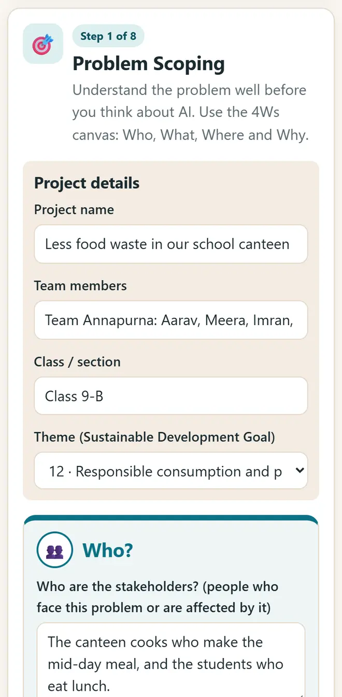
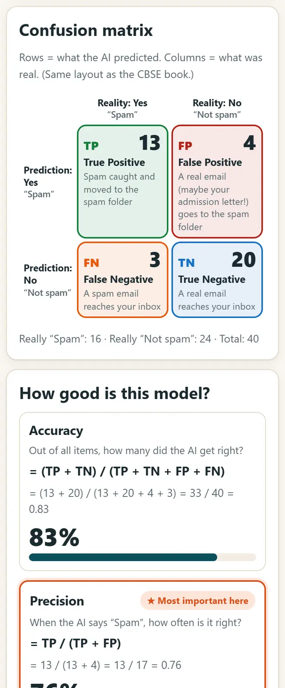

CBSE দশম শ্রেণির AI প্রোজেক্ট (বিষয় 417): ধাপে ধাপে গাইড
প্রোজেক্টে 10 নম্বর, আর তার ভাইভায় আলাদা 5 নম্বর। আইডিয়া কীভাবে বাছবেন, AI প্রোজেক্ট সাইকেল দিয়ে কীভাবে পরিকল্পনা করবেন আর কীভাবে উপস্থাপন করবেন, এখানে দেখুন; স্কুলের ল্যাবে বা ফোনে চলা বিনামূল্যের অ্যাপ সহ।
সংক্ষেপে উত্তর
2026-27-এর CBSE দশম শ্রেণির AI (417) সিলেবাসে প্র্যাকটিক্যাল 50 নম্বরের: প্র্যাকটিক্যাল ফাইল 15, প্র্যাকটিক্যাল পরীক্ষা 15, ভাইভা 5, প্রোজেক্ট (বা ফিল্ড ভিজিট বা পোর্টফোলিও) 10 আর প্রোজেক্ট ভাইভা 5। কোনো সাসটেইনেবল ডেভেলপমেন্ট গোলের (SDG) সঙ্গে যুক্ত একটি বাস্তব সমস্যা বেছে নিন, AI প্রজেক্ট সাইকেল ক্যানভাস-এ প্রতিটি ধাপের পরিকল্পনা করুন, একটি ছোট মডেল বানান আর কীভাবে যাচাই করলেন তা ব্যাখ্যা করুন।
6 ধাপে আপনার AI প্রোজেক্টের পরিকল্পনা করুন
-
একটি বাস্তব সমস্যা আর একটি SDG বেছে নিন
আশেপাশে দেখা যায় এমন সমস্যা বেছে নিন: ক্যান্টিনে খাবার নষ্ট, রাস্তার গর্ত, জলের অভাব, ফসলের রোগ বা পরীক্ষার চাপ। CBSE-র কথামতো সেটিকে 17টি সাসটেইনেবল ডেভেলপমেন্ট গোলের যেকোনো একটির সঙ্গে যুক্ত করুন।
-
4W দিয়ে সমস্যাটি বুঝুন
AI প্রজেক্ট সাইকেল ক্যানভাস খুলে নতুন প্রোজেক্ট শুরু করুন, বা আগে একটি নমুনা দেখে নিন। লিখুন সমস্যাটা কার (Who), কী (What), কোথায় হয় (Where) আর কেন জরুরি (Why); তারপর আপনার প্রবলেম স্টেটমেন্ট লিখুন।

AI প্রোজেক্ট সাইকেল ক্যানভাস: একটি নমুনা প্রোজেক্টের 4W। -
ডেটার পরিকল্পনা করুন
লিখুন কোন ডেটা দরকার, কোথা থেকে আসবে (সার্ভে, ছবি, সেন্সর বা কোনো পাবলিক ডেটাসেট) আর কীভাবে সেটা প্রাইভেট রাখবেন। ডেটা এক্সপ্লোরেশনে তার একটি সহজ চার্ট আঁকুন।
-
একটি ছোট মডেল বানান
AI-এর ক্ষেত্র বেছে নিন: স্ট্যাটিস্টিক্যাল ডেটা (টেবিল), কম্পিউটার ভিশন (ছবি) বা NLP (লেখা)। বিনামূল্যের অ্যাপে চেষ্টা করুন: ছবির জন্য কম্পিউটারকে শেখাও (ছবির AI), লেখার জন্য মুড চেনার AI শেখান বা কোডের জন্য Python প্লেগ্রাউন্ড। CBSE-র নিজের নমুনা প্রোজেক্ট: পেঙ্গুইনের প্রজাতি অনুমান, কোরাল ব্লিচিং আগেভাগে ধরা আর সেন্টিমেন্ট অ্যানালাইসিস।
-
সৎভাবে যাচাই করুন
মডেলটিকে এমন ডেটায় পরীক্ষা করুন যা সে আগে দেখেনি। আমার AI কতটা ভালো? (মূল্যায়ন)-এ কনফিউশন ম্যাট্রিক্স পূরণ করে অ্যাকুরেসি, প্রিসিশন, রিকল আর F1 দেখুন। লিখুন মডেল কোথায় আর কেন ভুল করে।

মডেল যাচাই: কনফিউশন ম্যাট্রিক্স, অ্যাকুরেসি, প্রিসিশন আর রিকল। -
নৈতিকতা যাচাই করে ক্যানভাস ছাপুন
প্রাইভেসি, ন্যায্যতা আর নিরাপত্তা নিয়ে নৈতিক প্রশ্নের উত্তর দিন, তারপর পুরো ক্যানভাস খুলে প্রোজেক্ট ফাইলের জন্য ছাপুন। ভাইভার জন্য দুই মিনিটে বুঝিয়ে বলার অনুশীলন করুন।
SDG সহ দশম শ্রেণির AI প্রোজেক্টের আইডিয়া
- স্ট্যাটিস্টিক্যাল ডেটা: কাল্পনিক উপস্থিতি আর পরীক্ষার নম্বর থেকে অনুমান করুন কোন ছাত্রছাত্রীদের বাড়তি সাহায্য লাগতে পারে (SDG 4, মানসম্মত শিক্ষা)।
- কম্পিউটার ভিশন: বর্জ্যের ছবিকে ভেজা আর শুকনোয় ভাগ করুন (SDG 12, দায়িত্বশীল ভোগ ও উৎপাদন)।
- কম্পিউটার ভিশন: ফসলের ছবিতে পাতার রোগ চিনুন (SDG 2, ক্ষুধামুক্তি)।
- NLP: ফিডব্যাক ফর্মে খুশি, দুঃখী বা রাগী মন্তব্য চিনুন (SDG 3, সুস্বাস্থ্য ও কল্যাণ)।
- NLP: স্কুলের হেল্প চ্যাটবট, যা সময় আর অনুষ্ঠান নিয়ে প্রশ্নের উত্তর দেয় (SDG 4, মানসম্মত শিক্ষা)।
নতুন বিনামূল্যের টুল আর হিন্দিতে AI-এর পাঠ পান
আমাদের ইমেল লিস্টে যোগ দিন: নতুন বিনামূল্যের অ্যাপ, নতুন গাইড আর AI নিয়ে হিন্দি ভিডিও পাঠের খবর পাবেন। কোনো স্প্যাম নয়।
শুধু প্রাপ্তবয়স্কদের (18+) জন্য। যেকোনো সময় নাম তুলে নিতে পারেন।
কেন আমরা এই টুলগুলো সুপারিশ করি
- সবার জন্য বিনামূল্যে: কোনো বিজ্ঞাপন নেই, সাইন-আপ নেই, পেইড প্ল্যান নেই।
- প্রাইভেট: আপনার ফাইল আর তথ্য আপনার নিজের ডিভাইসেই থাকে।
- ফোন, ল্যাপটপ বা স্মার্টবোর্ডে চলে, আর একবার খোলার পর ইন্টারনেট ছাড়াও।
- হিন্দি ও বাংলা সহ 12টি ভাষায়।
ভিডিও দেখে শিখতে ভালো লাগে? আমাদের YouTube চ্যানেলে AI আর বিনামূল্যের টুল নিয়ে হিন্দি পাঠ দেখুন।
প্রায়ই জিজ্ঞাসা করা প্রশ্ন
দশম শ্রেণির AI প্রোজেক্ট কত নম্বরের?
2026-27-এর সিলেবাসে প্রোজেক্ট ওয়ার্ক / ফিল্ড ভিজিট / স্টুডেন্ট পোর্টফোলিও (যেকোনো একটি) 10 নম্বরের আর তার ভাইভা 5 নম্বরের, যা 50 প্র্যাকটিক্যাল নম্বরের অংশ। সবসময় cbseacademic.nic.in-এ নতুন সিলেবাস দেখে নিন।
প্রোজেক্ট ফাইলে কী কী থাকা উচিত?
একটি ভালো প্রোজেক্ট ফাইলে সাধারণত থাকে শিরোনাম আর SDG, 4W প্রবলেম ক্যানভাস, ডেটার উৎস, ডেটার চার্ট, আপনার বানানো মডেল, কীভাবে যাচাই করলেন (অ্যাকুরেসি বা কনফিউশন ম্যাট্রিক্স), নৈতিকতার যাচাই আর কী উন্নত করবেন।
প্রোজেক্টের জন্য কি কোডিং জরুরি?
সবসময় নয়। ইউনিট 4-এ Orange-এর মতো নো-কোড টুল আছে, আর ছবি বা লেখার মডেল কোড ছাড়াও ট্রেন করা যায়। প্র্যাকটিক্যাল ফাইলের জন্য Python কাজে লাগে, যাতে অন্তত 15টি প্রোগ্রাম চাই।
প্র্যাকটিক্যাল ফাইল আর প্রোজেক্ট কি একই?
না। প্র্যাকটিক্যাল ফাইলে (15 নম্বর) অন্তত 15টি প্রোগ্রাম থাকে, যেমন লিস্ট যোগ করা, NumPy দিয়ে গড়, মধ্যমা আর সংখ্যাগুরু মান, চার্ট, আর CSV ফাইল বা ছবি পড়া। প্রোজেক্ট (10 নম্বর) একটি বাস্তব সমস্যার সমাধান করে।
এটা কি CBSE-র অফিসিয়াল রিসোর্স?
না। এটি 2026-27-এর CBSE পাঠ্যক্রমের ভিত্তিতে একটি স্বাধীন, বিনামূল্যের গাইড। শেষ কথা আপনার শিক্ষক আর অফিসিয়াল সিলেবাসের।
কাজে লাগল?
কোনো বন্ধু, সহকর্মী বা আপনার স্কুলের WhatsApp গ্রুপে পাঠিয়ে দিন।